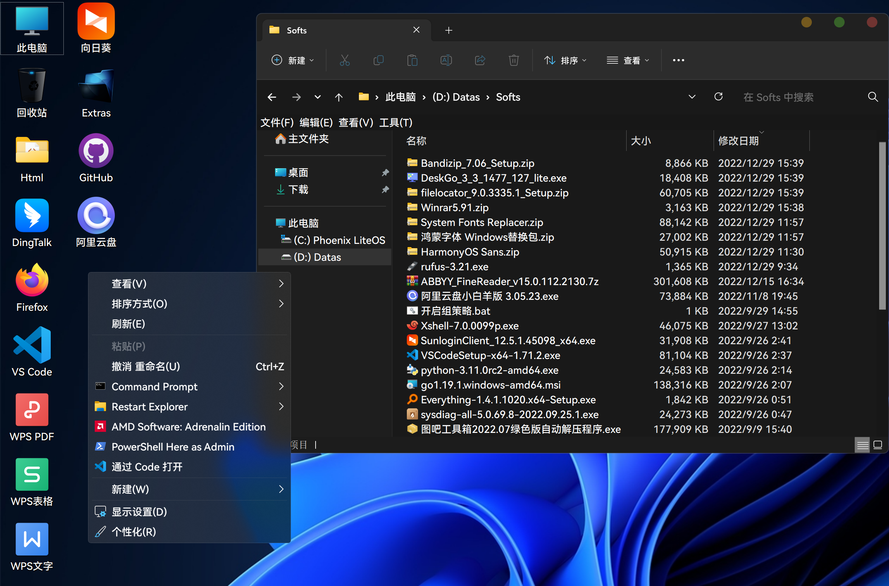
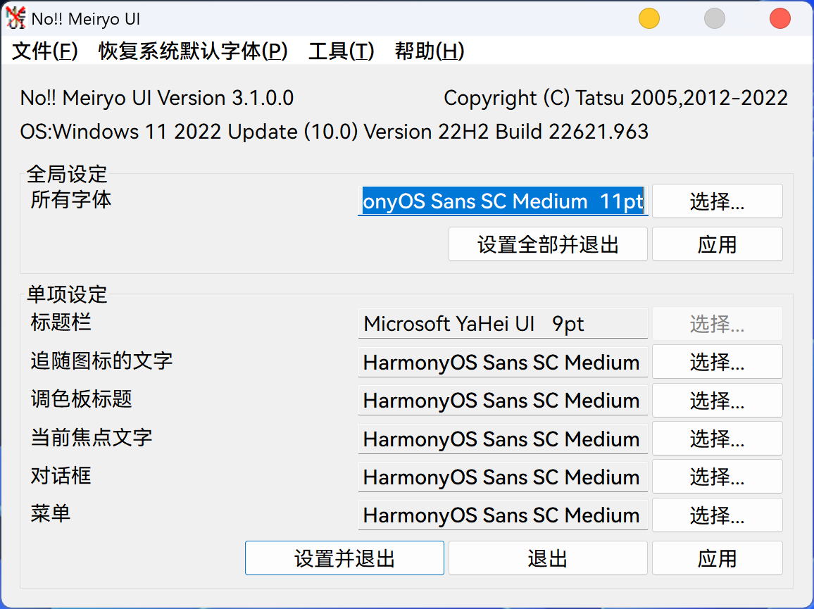

最终显示效果如图：

# 背景
最近将笔记本装上了 Phoenix 精简的系统 X-lite Win11 ，其默认显示语言为英文，可以下载安装中文语言包，但是貌似有以下几个问题：
- 会出现方块（乱码）
- 微软拼音无法启动（通过临时启动
ctfmon.exe或将其设为开机启动解决） - 中文字相较原版 win11 镜像难看（细小不齐等）
- 命令行中文字乱码（解决方法）
# 走过的弯路
- 使用该精简内置的优化工具
Winaero Tweaker修改为HarmonyOS_Sans_Medium.ttf字体，结果发现只能修改只对英文生效。 - 通过修改注册表，参见：https://blog.csdn.net/amoscn/article/details/106224359
# 正确姿势
使用 noMeiryoUI (下载地址) 进行修改，字体使用 HarmonyOS_Sans_SC_Medium.ttf 。你就能如愿以偿了。以下是我的配置截图：

2023/1/1 日更新，从上图可以看到， noMeiryoUI (下载地址) 并不支持 窗口标题 字体的修改，这时我们可以用 Winaero Tweaker 来进行，可以说两者互为补充。
# Everything 的黑色主题美化与配置备份
- 定位到
Everything目录； - 退出
Everything； - 将如下内容替换到
Everything.exe所在目录的Everything.ini中； - 重启
Everything。（如果你再打开Everything.ini，会发现已经将你提供的配置信息吸收了）
[Everything] | |
; 交错行 | |
alternate_row_color=1 | |
show_mouseover=1 | |
; 无关键词时空结果 | |
hide_empty_search_results=1 | |
; 切换窗口快捷键 | |
toggle_window_key=602 | |
; 在状态栏显示大小 | |
show_size_in_statusbar=1 | |
single_click_tray=1 | |
double_click_path=1 | |
auto_scroll_view=1 | |
; 复制时自动加双引号 | |
double_quote_copy_as_path=1 | |
focus_search_on_activate=1 | |
; 大小格式 —— 自动 | |
size_format=0 | |
; 索引文件夹大小 | |
index_folder_size=1 | |
; 显示筛选器 | |
filters_visible=1 | |
filter=EVERYTHING | |
; 结果排序规则 —— 文件（夹）大小 | |
sort=Size | |
; 结果排序规则 —— 正向 | |
sort_ascending=0 | |
; 字体，需要先安装对应字体才会生效 | |
result_list_font=HarmonyOS Sans SC Medium | |
; 配色 | |
normal_background_color=#21252b | |
normal_foreground_color=#aaaaaa | |
highlighted_foreground_color=#008080 | |
current_sort_background_color=#1c2026 | |
current_sort_highlighted_background_color=#21252b | |
mouseover_background_color=#2b2a33 | |
mouseover_highlighted_background_color=#ff0080 |
# 去除不想要的右键菜单
使用火绒自带的右键菜单管理工具即可
# WPS 相关
# 去除 WPS 云文档入口
注册表，找到如下位置删除文件。（不是右边的数值）
- 资源管理左导航栏：（中间数字可能有区别，看好开头结尾即可）
HKEY_USERS\S-1-5-21-1514480548-2261916930-102402149-1001\Software\Microsoft\Windows\CurrentVersion\Explorer\Desktop\NameSpace\{7AE6DE87-C956-4B40-9C89-3D166C9841D3} |
- 资源管理我的电脑：
HKEY_CURRENT_USER\Software\Microsoft\Windows\CurrentVersion\Explorer\MyComputer\NameSpace |
# 隐藏资源管理器左侧不想要的文件夹
弯路：
dism++默认提供 7 个文件夹的隐藏，但是下载和桌面我经常用到，这就需要自己动手定制了。
https://github.com/Chuyu-Team/Dism-Multi-language/issues/527https://jingyan.baidu.com/article/75ab0bcbb47b09d6864db2cc.html
直接右键该文件夹，选择
从"快速访问"取消固定即可，如图。

# 另参考文章
Windows 10 资源管理器隐藏网络、3D 对象、视频、图片、文档等多余文件夹：https://blog.csdn.net/m0_46463321/article/details/125387284
# windows 美化相关网站、视频
https://cleodesktop.gumroad.com/
https://cleodesktop.com/obetal-tequila-theme-for-windows-11/
https://zhutix.com/tag/win11-zhuti/
https://www.youtube.com/watch?v=To1AXc9ESwU 及 https://github.com/niivu/Windows-11-themes
<!-- ## 图案列表 No.2 -->